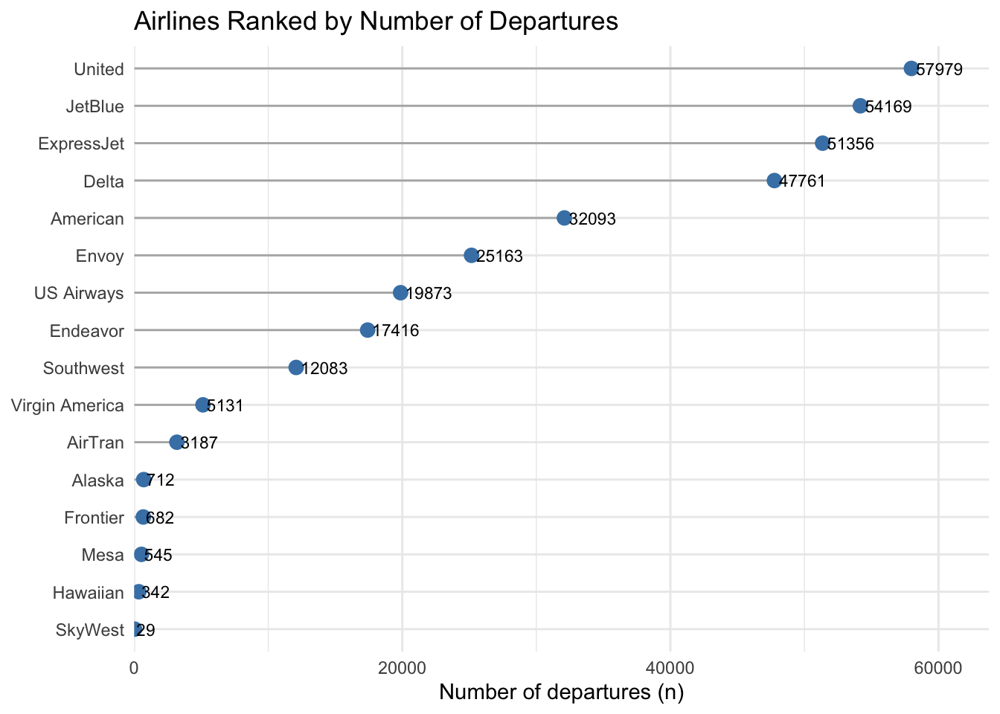
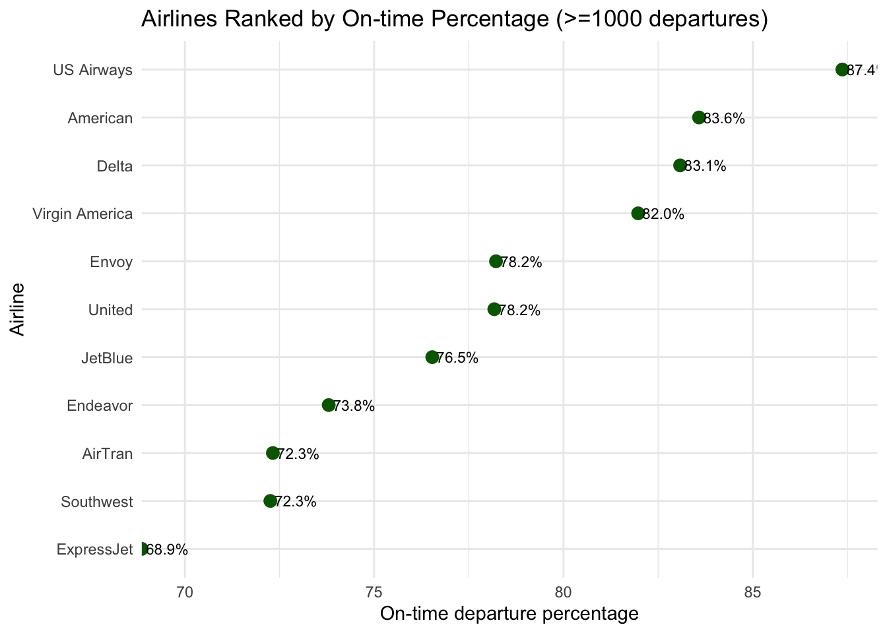
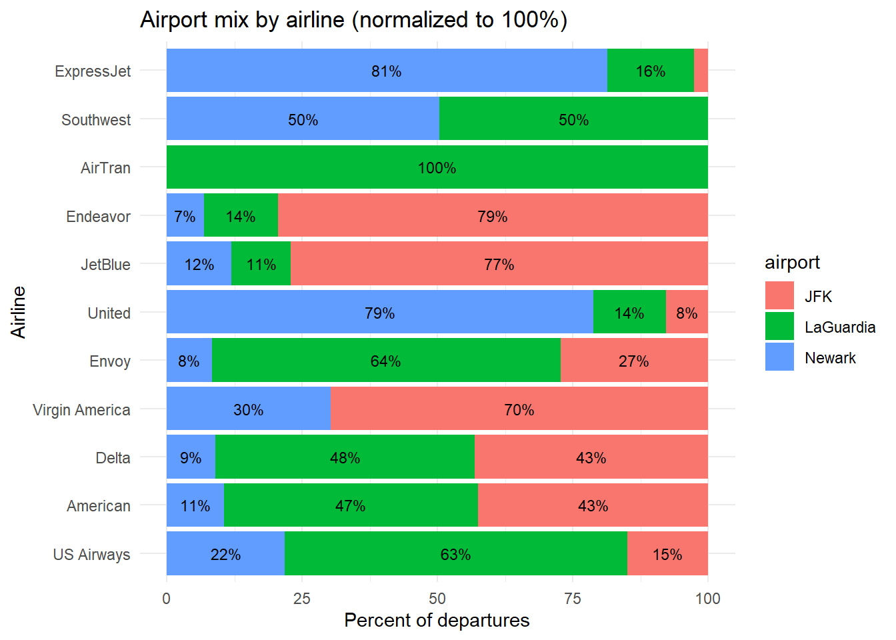
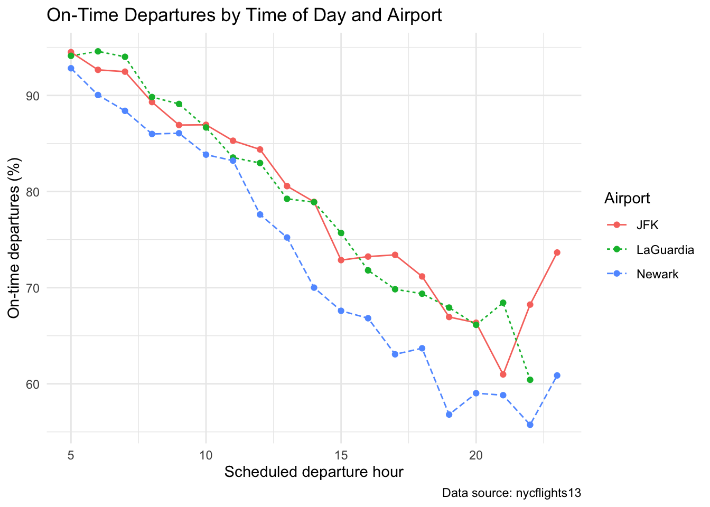
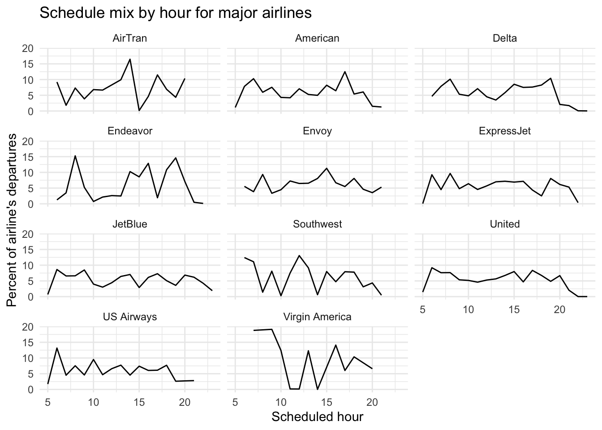
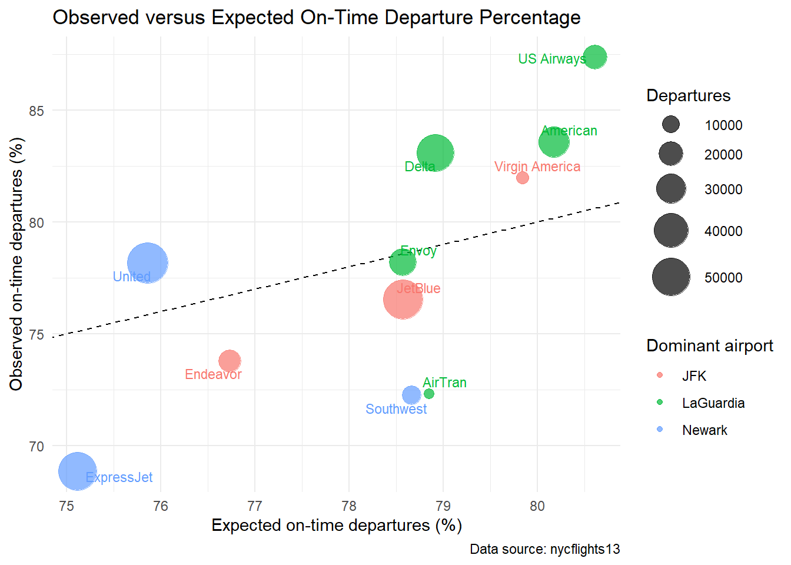

library(dplyr)
library(forcats)
library(ggplot2)
library(readr)
library(tidyr)
library(nycflights13)
library(ggrepel)
## Inline data preparation (reads carriers.csv and prepares `departures`)
# ensure data directory
if (!dir.exists("data")) {
dir.create("data")
}
# read carriers lookup
carriers <- readr::read_csv("carriers.csv", show_col_types = FALSE)
# prepare departures tibble per lab instructions
departures_pre_join <- flights %>%
filter(!is.na(dep_delay)) %>%
transmute(
airline_code = carrier,
airport_code = origin,
airport = dplyr::recode(
origin,
EWR = "Newark",
LGA = "LaGuardia",
JFK = "JFK"
),
hour = hour,
on_time = dep_delay < 15
)
departures_joined <- departures_pre_join %>%
left_join(carriers, by = c("airline_code" = "airline_code")) %>%
select(airline = airline, airport, hour, on_time)
departures <- departures_joined
# save prepared data for reproducibility (optional)
readr::write_rds(departures, file = "data/departures.rds")team-navy-nyc-delays-lab
1 Overview
This Quarto document implements the Week 06 lab tasks on visualizing on-time departures from New York City-area airports. Follow the code chunks below to reproduce the figures and answers from the lab brief.
2 Lab Rules
Permitted Packages in this lab:
- ggrepel
- nycflights13
- dplyr
- forcats
- ggplot2
- lubridate
- purrr
- readr
- stringr
- tibble
- tidyr
3 Tasks
Placeholders for lab tasks (3.1–3.9). Implement plots in subsequent code chunks following the lab instructions.
3.1 Data preparation
Verifier Task: A join can silently add rows if the lookup table contains duplicate codes, or it can leave unmatched values as NA. Confirm that departures has the same number of rows before and after the join, and that the final tibble contains no missing values.
# Verifier: ensure the join did not add rows and no missing values were created
pre_join_rows <- nrow(departures_pre_join)
post_join_rows <- nrow(departures_joined)
c(
pre_join_rows = pre_join_rows,
post_join_rows = post_join_rows
) pre_join_rows post_join_rows
328521 328521 stopifnot(pre_join_rows == post_join_rows)
stopifnot(all(
c("airline", "airport", "hour", "on_time") %in% names(departures)
))
stopifnot(!any(is.na(departures)))3.2 Airlines Ranked by Departures (Lollipop)
3.2a, 3.2b, 3.2d
departures_by_airline <- departures %>%
group_by(airline) %>%
summarise(n = n(), on_time_pct = mean(on_time) * 100, .groups = "drop") %>%
arrange(n)
# convert to factor ordered by n
departures_by_airline <- departures_by_airline %>%
mutate(airline = factor(airline, levels = airline))
library(ggplot2)
library(forcats)
ggplot(departures_by_airline, aes(x = n, y = fct_reorder(airline, n))) +
geom_segment(
aes(x = 0, xend = n, y = airline, yend = airline),
color = "gray70"
) +
geom_point(size = 3, color = "steelblue") +
geom_text(aes(label = n), hjust = -0.1, size = 3) +
labs(
x = "Number of departures (n)",
y = "Airline",
title = "Airlines Ranked by Number of Departures"
) +
theme_minimal() +
theme(axis.title.y = element_blank()) +
scale_x_continuous(expand = expansion(mult = c(0, 0.1)))
3.2.c What is the advantage of placing the airline names on the y-axis rather than the x-axis in this plot? Keep your answer brief.
Placing airline names on the y‑axis makes the chart easier to read because text labels are listed vertically,so they don’t overlap.
3.2.e one advantage and one disadvantage of a lollipop chart compared with a bar chart.
One advantage of using lollipop instead of bar chart is that it emphasizes the endpoints values to make it easier to compare the values. However, one disadvantage is that if there are many categories, the lines can overlap and make the chart cluttered and harder to read.
Verifier Task: Confirm that the sum of the counts in departures_by_airline equals the number of rows in departures.
# Verifier: sum of counts equals number of rows in departures
stopifnot(sum(departures_by_airline$n) == nrow(departures))3.3 On-Time Departures by Airline (Cleveland dot plot)
# remove airlines with fewer than 1000 departures
departures_by_airline_big <- departures_by_airline %>% filter(n >= 1000)
departures_by_airline_big <- departures_by_airline_big %>%
arrange(on_time_pct) %>%
mutate(airline = factor(airline, levels = airline))
ggplot(departures_by_airline_big, aes(x = on_time_pct, y = airline)) +
geom_point(size = 3, color = "darkgreen") +
geom_text(
aes(label = sprintf("%.1f%%", on_time_pct)),
hjust = -0.1,
size = 3
) +
labs(
x = "On-time departure percentage",
y = "Airline",
title = "Airlines Ranked by On-time Percentage (>=1000 departures)"
) +
theme_minimal() +
scale_x_continuous(expand = expansion(mult = c(0, 0.05)))
3.3.d Why is it acceptable for the x-axis of a Cleveland dot plot not to start at zero, whereas the x-axis of a bar chart or lollipop chart always should?
It is acceptable for the x-axis to not start at zero for the cleveland dot plot because it is used to compare the difference between the values instead of the actual values. however for lollipop chart, you should always start the x-axis at 0 so as to compare the actual values.
3.3.e Find the busiest airline from the previous task—the top lollipop of the previous plot—in this punctuality ranking. Record where it appears in the ranking. The tasks that follow ask whether its raw on-time percentage should be interpreted on its own, or whether it partly reflects where and when the airline flies. Note, too, the airline at the very bottom of the ranking; you will return to it for comparison at the end.
The top departure from the lollipop chart is united airlines. In this punctuality ranking, united airlines is ranked 6th
Verifier Task: Confirm that the on-time percentage you calculated for the busiest airline matches the value you can calculate directly from the departures tibble.
# Verifier: check busiest airline's on-time pct matches calculation from departures
busiest_airline <- departures_by_airline %>%
arrange(desc(n)) %>%
slice_head(n = 1) %>%
pull(airline)
calc_pct <- departures %>%
filter(airline == busiest_airline) %>%
summarise(pct = mean(on_time) * 100) %>%
pull(pct)
found_pct <- departures_by_airline %>%
filter(airline == busiest_airline) %>%
pull(on_time_pct)
stopifnot(abs(calc_pct - found_pct) < 1e-8)3.4 Airport Mix by Airline (Normalized stacked bar)
mix <- departures %>%
filter(
airline %in% (departures_by_airline %>% filter(n >= 1000) %>% pull(airline))
) %>%
group_by(airline, airport) %>%
summarise(n = n(), .groups = "drop") %>%
group_by(airline) %>%
mutate(pct = n / sum(n) * 100) %>%
ungroup()
mix <- mix %>%
mutate(
airline = factor(
airline,
levels = (departures_by_airline %>%
arrange(on_time_pct) %>%
pull(airline))
)
)
ggplot(mix, aes(x = pct, y = airline, fill = airport)) +
geom_col(position = "stack") +
geom_text(
aes(label = ifelse(pct >= 5, sprintf("%.0f%%", pct), "")),
position = position_stack(vjust = 0.5),
size = 3
) +
labs(
x = "Percent of departures",
y = "Airline",
title = "Airport mix by airline (normalized to 100%)"
) +
theme_minimal()
Verifier Task: Confirm that the percentages you calculated for each airline sum to 100%, apart from rounding error.
# Verifier: percentages per airline sum to ~100
sum_check <- mix %>% group_by(airline) %>% summarise(total = sum(pct))
stopifnot(all(
abs(sum_check$total - 100) < 1e-6 | abs(sum_check$total - 100) < 0.1
))3.4.d Based on the stacked bar chart, which airport does the busiest airline depart from most, and how lopsided is that share? Call this airport the airline’s dominant airport; you will use the term again later.
The airport that the busiest airline (united airlines) departs from most is Newark. 80% of united airline departures are from Newark.
3.5 On-Time Departures by Airport
by_airport <- departures %>%
group_by(airport) %>%
summarise(
n = n(),
on_time_pct = mean(on_time) * 100,
.groups = "drop"
)
by_airport# A tibble: 3 × 3
airport n on_time_pct
<chr> <int> <dbl>
1 JFK 109416 78.7
2 LaGuardia 101509 80.5
3 Newark 117596 74.7Verifier Task: A rate for the whole is not the simple average of the rates for its parts—it is the average weighted by size. Confirm that your values are internally consistent: The departure-weighted mean of the three airport on-time percentages (each weighted by that airport’s n) must equal the overall on-time percentage across all rows of departures. Compute both and check that they match. Then take the plain, unweighted average of the three percentages and note how far off it is—and why averaging rates without weights is a mistake.
weighted_airport_rate <- weighted.mean(by_airport$on_time_pct, by_airport$n)
overall_rate <- mean(departures$on_time) * 100
unweighted_airport_rate <- mean(by_airport$on_time_pct)
c(
weighted_airport_rate = weighted_airport_rate,
overall_rate = overall_rate,
unweighted_airport_rate = unweighted_airport_rate,
unweighted_error = unweighted_airport_rate - overall_rate
) weighted_airport_rate overall_rate unweighted_airport_rate
77.8053762 77.8053762 77.9482176
unweighted_error
0.1428414 stopifnot(abs(weighted_airport_rate - overall_rate) < 1e-8)The weighted airport rate matches the overall rate: both are 77.80538%. The unweighted average is 77.94822%, which is 0.14284 percentage points higher than the overall rate. The unweighted average is off because it gives JFK, LaGuardia, and Newark equal weight even though they have different numbers of departures; airport rates should be weighted by departure count.
3.5.b Is the dominant departure airport of the busiest airline also the airport with the lowest on-time percentage? If so, what does that suggest? Could the airline’s raw rank partly reflect where it flies rather than its schedule-adjusted punctuality?
The dominant departure airport of United Airlines is Newark and it has the lowest on-time percentage. This suggests that United airlines raw rank may partly reflect where it flies rather than its schedule-adjusted punctuality.
3.6 On-Time Departures by Time of Day and Airport
hour_airport <- departures %>%
group_by(airport, hour) %>%
summarise(
n = n(),
on_time_pct = mean(on_time) * 100,
.groups = "drop"
)
ggplot(
hour_airport,
aes(x = hour, y = on_time_pct, color = airport, linetype = airport)
) +
geom_line() +
geom_point() +
labs(
x = "Scheduled departure hour",
y = "On-time departures (%)",
color = "Airport",
linetype = "Airport",
title = "On-Time Departures by Time of Day and Airport",
caption = "Data source: nycflights13"
) +
theme_minimal()
3.6.c You mapped airport to color and linetype—two visual properties for one variable. Briefly justify this apparent redundancy: What does line type protect against that color alone does not?
Mapping airport to both color and linetype makes the lines easier to distinguish if the plot is printed in grayscale or viewed by someone who is color blind or deficient.
Verifier Task: The plot may indicate that the on-time departure percentage declines over the course of the day. Find evidence from a credible source that this is a known phenomenon in the airline industry, quote a short relevant passage, and cite the source in your answer. Your quotation must support the claim directly, not merely mention flight delays in general.
This pattern is consistent with airline-industry reporting. The Washington Post, citing U.S. Transportation Department data, reported that flights in the “6 a.m. hour” left on time “more than 94 percent” of the time, while by the “6 p.m. hour, 79 percent” were leaving on time (Sampson, 2025). This directly supports the plot’s suggestion that on-time departure percentages tend to be higher early in the day and lower later in the day.1
One reason this happens is that delays can build up as the day progresses. Early flights often use aircraft that were already parked at the airport overnight, so they are less affected by late-arriving inbound planes. Later flights are more exposed to earlier disruptions, because a delayed aircraft, crew, or airport operation can affect the next flights in the schedule. Therefore, if the line plot shows lower on-time percentages in the afternoon or evening, that pattern is plausible and not just random noise in this dataset.
3.7 Schedule Mix by Airline
hourly_mix <- departures %>%
filter(airline %in% departures_by_airline_big$airline) %>%
count(airline, hour) %>%
complete(airline, hour = 5:23, fill = list(n = 0)) %>%
group_by(airline) %>%
mutate(pct = n / sum(n) * 100) %>%
ungroup() %>%
mutate(
airline = factor(
airline,
levels = departures_by_airline_big %>%
arrange(on_time_pct) %>%
pull(airline)
)
)
ggplot(hourly_mix, aes(x = hour, y = airline, fill = pct)) +
geom_tile() +
labs(
x = "Scheduled departure hour",
y = "Airline",
fill = "Departures (%)",
title = "Schedule Mix by Airline and Hour",
caption = "Data source: nycflights13"
) +
theme_minimal()
3.7.c Interpret the heatmap. Locate the busiest airline you have been tracking since Section 3.3. Does it concentrate its departures in late, lower-punctuality hours, or does it fly at more favorable times? Based on the heatmap, how much can when it flies explain its raw punctuality rank?
United Airlines does not appear heavily concentrated in late, lower-punctuality hours. It also has many departures during more favorable times of day. Based on the heatmap, schedule time alone explains only a limited part of United’s raw punctuality rank; its airport mix, especially its heavy use of Newark, seems more important.
3.8 Observed versus Expected On-Time Departure Percentage
slots <- departures %>%
summarize(
n = n(),
baseline_on_time_pct = mean(on_time) * 100,
.by = c(airport, hour)
)
dominant_airport <- departures %>%
count(airline, airport) %>%
slice_max(n, n = 1, by = airline, with_ties = FALSE) %>%
select(airline, dominant_airport = airport)
airline_performance <- departures %>%
left_join(slots, by = c("airport", "hour")) %>%
summarize(
n = n(),
on_time_pct = mean(on_time) * 100,
expected_on_time_pct = mean(baseline_on_time_pct),
.by = airline
) %>%
filter(n >= 1000) %>%
left_join(dominant_airport, by = "airline")
ggplot(
airline_performance,
aes(
x = expected_on_time_pct,
y = on_time_pct,
color = dominant_airport,
label = airline
)
) +
geom_abline(slope = 1, intercept = 0, linetype = "dashed") +
geom_point(aes(size = n), alpha = 0.7) +
geom_text_repel(size = 3, show.legend = FALSE) +
scale_size_area(max_size = 12) +
labs(
x = "Expected on-time departures (%)",
y = "Observed on-time departures (%)",
size = "Departures",
color = "Dominant airport",
title = "Observed versus Expected On-Time Departure Percentage",
caption = "Data source: nycflights13"
) +
theme_minimal()
3.9 Summary and Interpretation
Compare its dominant airport, expected on-time percentage, and position relative to the equality line with those of the busiest airline. Are the two airlines facing similar airport-hour circumstances? If so, what does their difference in observed on-time percentage suggest?
United is the busiest airline. Although its raw on-time percentage is not among the highest, its expected on-time percentage is also relatively low because it mainly operates from Newark and faces a less favorable airport-hour mix. Since United appears above the equality line, it performed better than expected given its airport-hour circumstances.
ExpressJet is the airline at the bottom of the punctuality ranking. Like United, it mainly operates from Newark, so both airlines face somewhat similar airport circumstances. However, ExpressJet appears below the equality line, meaning its observed on-time percentage is worse than expected from its schedule mix.
Using this contrast, answer the lab’s question in two or three sentences: What does the raw on-time departure ranking reveal, and what does it obscure once airport-hour circumstances are considered?
Overall, the raw on-time ranking shows which airlines had higher or lower observed punctuality, but it obscures the airport and time-of-day conditions each airline faced. Comparing observed and expected on-time percentages shows whether an airline’s performance is better or worse than what its schedule circumstances would predict.
Individual reflection: How does seeing the data rather than reading it in a table shaped their understanding over the course of this lab. Point to a specific moment: A plot that revealed something a column of numbers would have hidden, or a chart that overturned an impression an earlier step had left you with
- Zen:
- During this lab i found that the visualisaions helped me understand the airline data much better than looking at tables alone.The most useful plot for me was the observed-versus-expected punctuality chart because it showed that an airline’s ranking can be affected by the airports and times at which it operates. Before seeing that chart, I assumed the raw ranking reflected only airline performance.
- Jun Lum:
- The airport mix bar chart revealed to me that United airline late departures was due to a bad airport as seen in the on time departure by time and day and airport, Newark has the lowest on time departure and united airlines has 79% of departure from Newark. This make me realise how important visual graphs is at in helping to deduce hidden information.
- Benjamin:
- When I was doing the lab, the most shocking facter for me was the stacked bar chart. I never would have noticed that AirTran relies entirely on LaGuardia airport which made me realize that their punctuality ranking is solely based on how LaGuardia was running. It made my initial assumption of airlines spreading their flights evenly accross the city completely wrong as I did not expect an airline to only fly in a single airport.
- Phoebe:
- I realized how much the visualizations helped me understand the data better than just looking at tables. The most useful plot for me was the heatmap of schedule mix by airline and hour because it showed me that the busiest airline, United, does not concentrate its departures in late, lower-punctuality hours. This made me realize that time of day alone explains only a limited part of United’s punctuality rank, so its airport mix and other operating circumstances also need to be considered.
4 Team reflection and contributions
4.1 Reflection on AI Use
A highly effective suggestion was the AI’s method for ranking and visualizing categorical data for the Cleveland dot plot and lollipop chart. When asked how to reorder airline names, the AI correctly recommended the forcats package which is on the allowed list, using forcats::fct_reorder() combined with forcats::fct_rev(). This efficiently handled the data required for horizontal visualizations in ggplot2, ensuring the airlines were cleanly ranked by numeric value from top to bottom without the need for manual factor-level manipulation.
Before the above, the team prompted “How do I reorder airline names by departure count so they appear ranked in a ggplot?” and the AI initially suggested using the base R reorder() function: ggplot(departures_by_airline, aes(x = n, y = reorder(airline, n))) + geom_point(). Although the initial suggestion works, it does not fit into the lab’s package policy, which explicitly includes the forcats package for handling categorical factors. The team recognized that relying on base R for factor manipulation is outdated and does not fit the lab’s package policy. Thus, the team corrected it with further prompting of the AI for a better suggestion to be used in the lab.
4.2 Each Member’s Role and Contributions
- Zen: AI Laison
- Jun Lum: Constructive Critic + Reporter
- Benjamin: Coder
- Phoebe: Navigator + Verifier
Footnotes
Sampson, H. (2025, February 25). The agony and ecstasy of the 6 a.m. flight. The Washington Post. https://www.washingtonpost.com/travel/2025/02/25/early-flight-first-delays-airlines/↩︎